ComputerWorld: A reproducible world for computer-use agents
Train, evaluate, and build agents across simulated computers and a connected internet. Fork checkpoints, replay actions, and inspect the state behind the screen.
01 / For researchers
Training environments for computer-use agents.
Fork world state for parallel rollouts, compute rewards from explicit state checks, and extract labelled frames.
Branch from the same checkpoint.
Take a snapshot, fork independent worlds, and try different action sequences. Each branch starts from the same state. Repeating the same actions with the same engine, world, seed, and viewport reproduces the run exactly.
- Fork latency
- 35.0 µs
- Retained per fork
- 20.9 KB
Measured natively on company-2026 after 1,000 actor steps. Retained memory is before a branch writes; subsequent writes have additional costs. Benchmark and methodology ↗
 Checkpoint2 open pull requests
Checkpoint2 open pull requests 1Open #15
1Open #15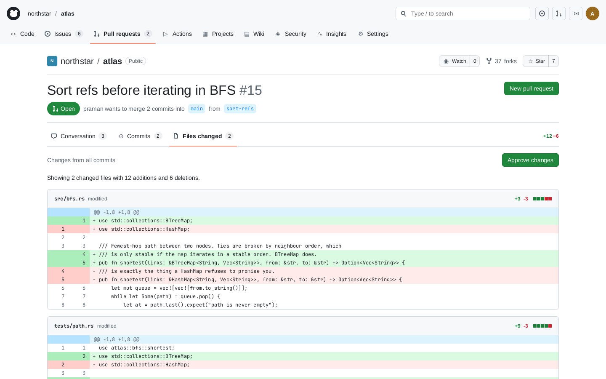
2Commits 3Files changed
3Files changed 4Conversation
4Conversation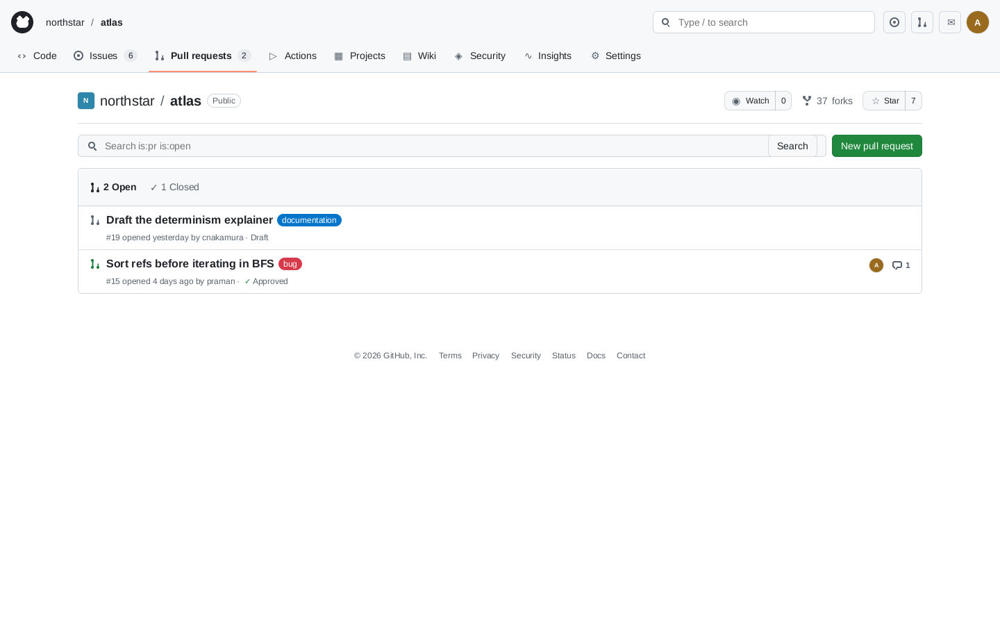
5Back to the list
No policy broken
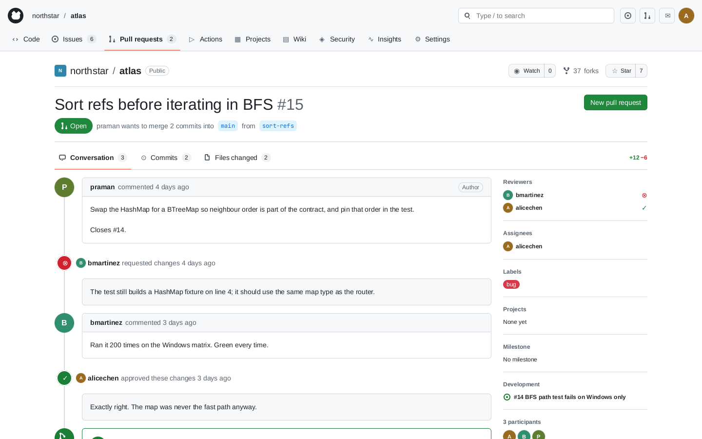
1Open #15 2Files changed
2Files changed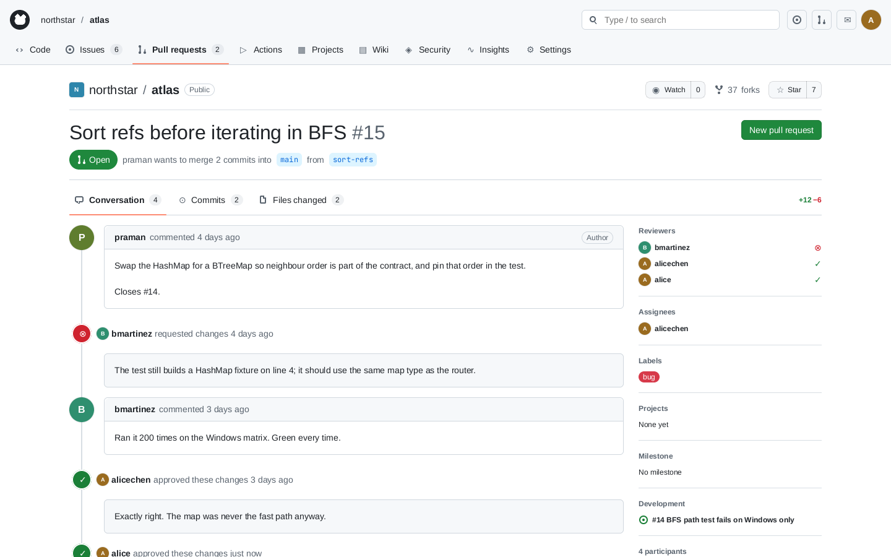
3Approve changes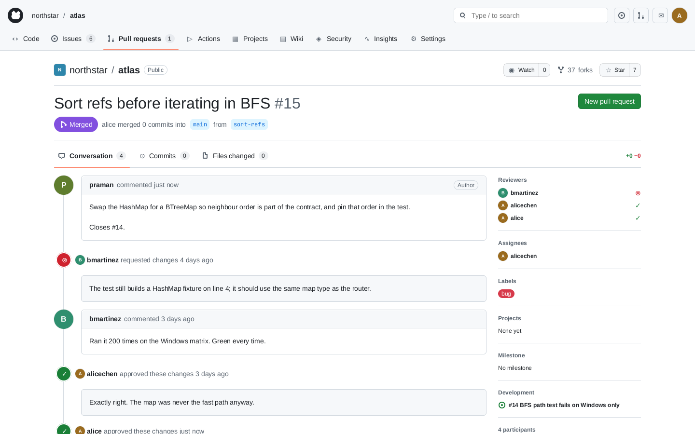
4Merge pull request
P5 broken
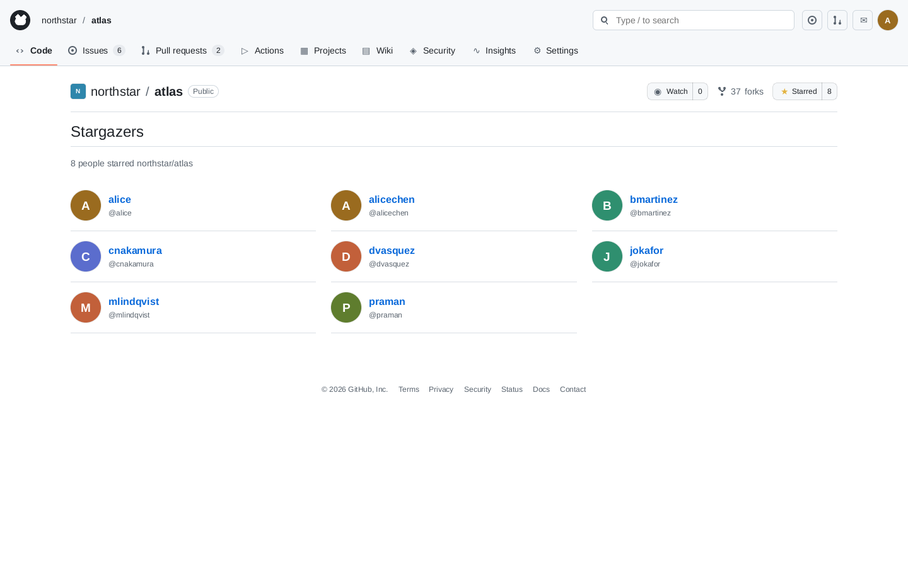
1Issues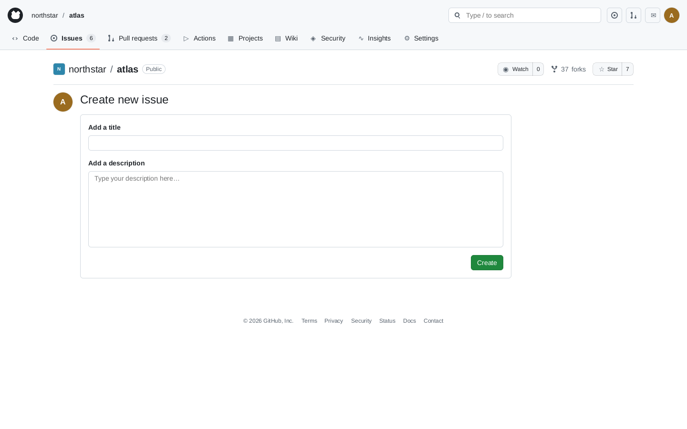
2New issue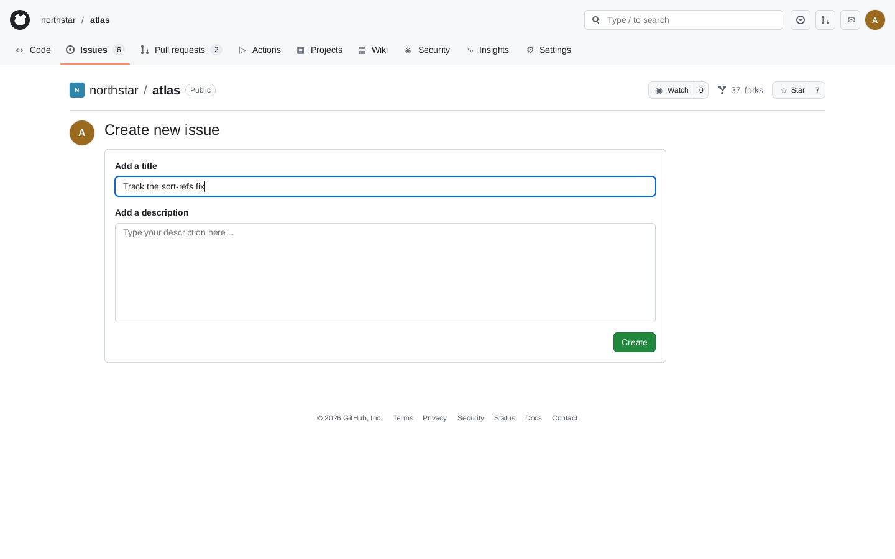
3Type a title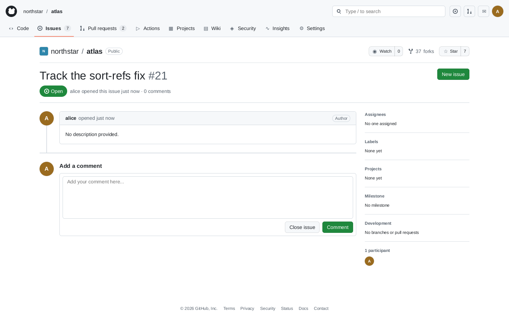
4Create
P13 broken
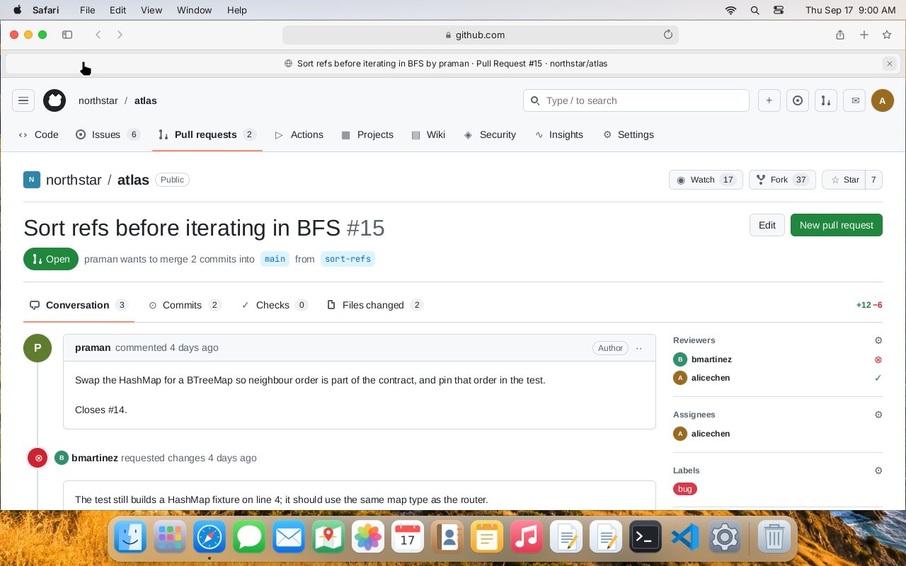
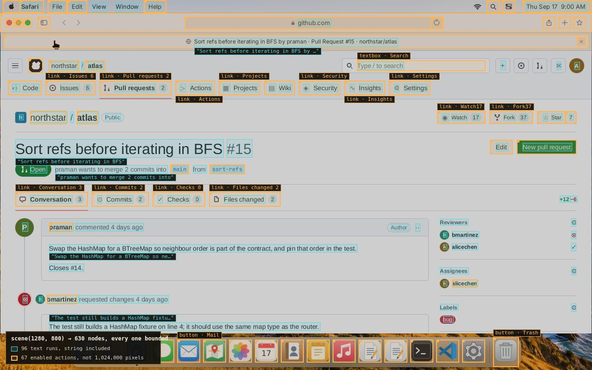
State checks and frame labels.
Use explicit predicates over world state to compute per-step rewards. A check gives the same verdict on replay; what it measures depends on the specification you write.
scene() exposes text, widgets, and their bounds before rendering. Use those labels for perception training or enumerate the controls available to an agent.
Engine-labelled frames improved held-out-font OCR accuracy from 66.8% to 79.4%. OCR case study ↗
02 / For evaluation teams
Reproducible evaluations and bounded policy checks.
Replay failures exactly. Explore a defined action space and return the sequence that violates a policy.
Inspect the actions behind a violation.
Choose a start state, action set, and search depth. The checker explores the configured search space and tests policies against state. A counterexample records the actions needed to reproduce the violation.
In the example, two actions violate P2: open the pull request, then merge it while a request for changes still stands.
A result that holds is bounded by the chosen model, start state, action domains, and depth. It is not a guarantee about every possible action or a production application.
Reference-world results
15 policies checked to depth 5.
6held within the search
9reachable violations
77,748states checked
Simulated pull-request review and merge flow · engine 0.2.0 · seed 7 · 21 September 2026. All nine counterexamples reproduced from a fresh world.
View all policies and counterexamples
| Policy | Statement | Verdict |
|---|---|---|
The run's own output is data/policies.json; this table is that file, rendered. | ||
03 / For developers
Programmable computers, applications, and services.
Define a world and control it through Python, JavaScript, or Rust. The same Rust engine runs natively and as WebAssembly.
Configure the world your agent uses.
World definitions describe machines, users, files, and network services. Connect desktops and phones to shared mail, chat, documents, and Git services, then give each agent a handle with explicit action and observation permissions.
Extend the simulation with custom applications and services. Supported operations and fidelity limits are documented per subsystem.
Start with an environment.
These examples use a world definition. Follow the first-episode guide for setup and a complete example.
pip install computerworldfrom computerworld import World
world = World(definition, seed=42)
env = world.environment({"actor": "alice", "machines": ["alice-mac"],
"actions": ["pointer.v1", "keyboard.v1", "application.v1"],
"observations": ["semantic.v1"]})
env.step([{"family": "application.v1", "op": "launch",
"machine": "alice-mac", "payload": {"kind": "code"}}])
scene = env.scene(1440, 900) # roles, names, geometry — no pixels needed
frame = env.render(1440, 900) # or exact RGBA, if your model wants pixelsimport init, { World } from "computerworld";
await init();
const world = new World(definition, 42n);
const env = world.environment({ actor: "alice", machines: ["alice-mac"],
actions: ["pointer.v1", "keyboard.v1", "application.v1"],
observations: ["semantic.v1"] });
env.step([{ family: "pointer.v1", op: "click",
machine: "alice-mac", payload: { x: 480, y: 620, width: 1440, height: 900 } }]);
const scene = env.scene(1440, 900);
const snapshot = world.snapshot(); // fork it, replay it, diff ituse computerworld::{reference_world, ActionEnvelope, EnvironmentConfig, World};
let mut world = World::new(reference_world(), 7)?;
let session = world.environment(EnvironmentConfig::desktop("alice", "alice-mac"))?;
world.step(&session, vec![ActionEnvelope::new(
"terminal.v1", "execute", "alice-mac",
serde_json::json!({ "command": "python3 primes.py" }),
)])?;
let checkpoint = world.snapshot();
let branch = world.fork(&checkpoint)?; // explore both futures